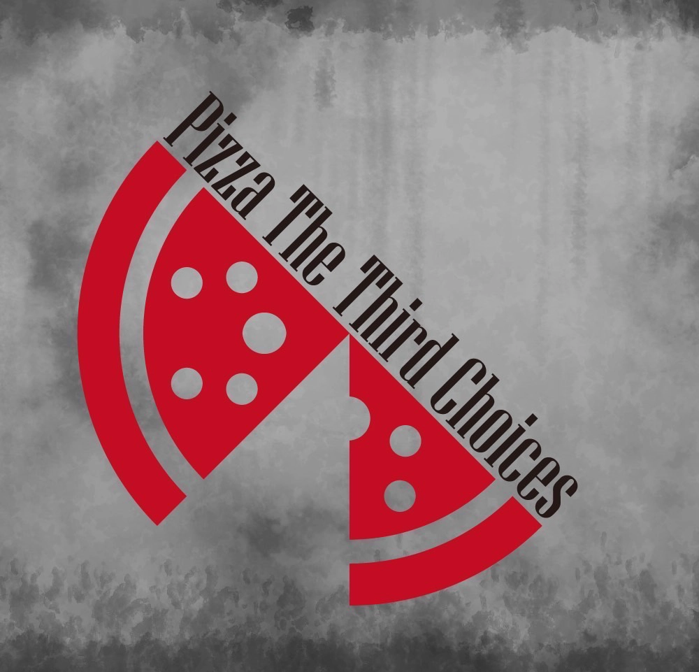

PIZZA THE THIRD CHOICES / OFFICIAL WEBSITE
Pizza The Third Choices
MUSIC / LIVE / ARCHIVE

2024年、地中海の方からはるばるやってきた新進気鋭の3人組バンド、Pizza The Third Choices。全楽曲を1分間で構成する独自のジャンル「Pizza-Core」を掲げて活動している。
ポップなベースサウンドとロジカルな歌詞を構築するMarco（Ba.Vo. / Left）、Fender SIXで多彩な音色を奏でるLeonardo（Ba.Vo. / Right）、ハードコアの影響を色濃く受けた奇妙なドラムを鳴らすDonatello（Dr.）。三者三様の異なる方向性が交錯して生まれる楽曲は、国内外の一部で熱狂的な支持を獲得している。
READ MORE ＋
2025年12月25日に1st Album『Love at First Sight』、2026年3月14日には2nd Album『Inevitable Death』を配信。オルタナティブの枠組みを超え、実験的なダークポップの要素を取り入れた楽曲を多数収録している。
続く2026年6月4日には、戦争へのアンチテーゼをテーマとした「33」、HIP-HOPの影響を受けた「Priority」などを収録した3rd Album『Pentagon Pizza Puzzle』を公開。ジャンルの境界を横断しながら、独自のサウンドと表現を深化させ続けている。
2025年には、オリジナルドキュメンタリー映像『Is Pizza The Third Choices?』をYouTubeにて公開。楽曲制作の経緯や、独自のジャンル「Pizza-Core」の実態に迫る内容となっている。
ライブ活動においては、2024年よりオルタナティブハードコアバンドHanaoとの共同自主企画『YEAH』を複数回開催。「YEAHみくじ」によるランダムセットリストをはじめ、通常のライブとは一線を画す演出を展開している。
2026年11月8日には、©エスパーキックより全33曲とボーナストラックを収録した1st Cassette『33』を発売予定。同日にはリリースパーティの開催も予定している。
LISTEN
MERCH
MUSIC
TABLE
LIVE
ARCHIVE
STICKER / T-SHIRT
VIEW MERCH ↗